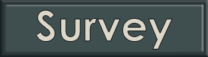

Thanks for taking the time to go over my website!
Hopefully, you enjoy all my pets, and after you've read through their profiles you can take a survey about what pet you liked best!
Although, they're all great, so the survey is just for fun!! :)
- Kevin Sloan
|  | |
| Follow the Wiki-Pets button to get to the main focus of the website... My Pets! |
When you're ready, use this button to go to the Survey! |